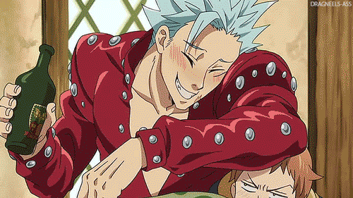

BAN

Ban「バン」 is a member of the Seven Deadly Sins and is the Fox's Sin of Greed. After the group's disbandment, Ban was initially imprisoned in the Baste Dungeon,[1] but escaped when he discovered that Meliodas was still alive. His Sacred Treasure is the Holy Rod Courechouse. On top of being immortal, he is known for his ability, Snatch.
Ban is a very tall, muscular man with tan skin, who possesses a set of well-developed abdominal muscles and usually has a slouch. He has short, spiky, pale blue hair and thin black eyebrows, as well as a pair of scarlet-red eyes. On the left side of his jaw and extending down to his neck, he has a large scar given to him by Meliodas. At the end of the Baste Dungeon Arc, he is shown wearing a red leather jacket and pants with metal studs sewn into both, alongside shoes of a similar, yet darker color. Ten years ago, Ban wore a full set of red armor with a helmet like the rest of his teammates and wielded either a three-sectioned staff or a rapier. During his imprisonment at the Baste Dungeon, his hair had grown past his shoulders and he had also grown a large beard and mustache. However, soon after escaping his cell, he utilized Jericho's attacks to trim away his facial hair and to reduce his long hairstyle. Due to losing his shirt during his fight against King in the Capital of the Dead Arc, Ban decided to wear an apron, until he was able to find a similar set of clothes during the Vaizel Fight Festival. His Seven Deadly Sins symbol of the Fox, is located above his waist on his left side. His wanted poster image, which is slightly accurate, depicts him with long hair that extends past his shoulders. The image also displays a clear view of his distinctive scar.